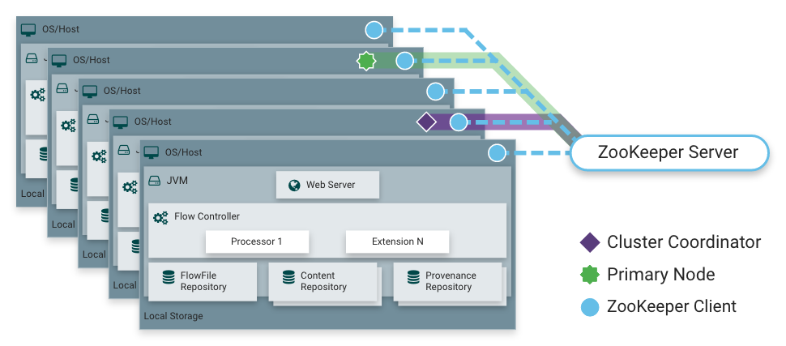

Apache NiFi 란 무엇입니까?
간단히 넣어, NiFi는 시스템간에 데이터의 흐름을 자동화하기 위해 내장되었습니다. 더 알아보기 용어 'dataflow'는 다양한 컨텍스트에서 사용됩니다. 우리는 여기에서 사용합니다. 시스템 간의 자동화 및 관리적 흐름을 의미합니다. 으로 문제는 기업이 1 개 이상의 시스템을 가지고 있기 때문에 주변되었습니다. 시스템의 일부가 데이터를 생성하고 시스템의 일부는 데이터를 소비. 출현된 문제와 해결책 본은 토론되고 광범위하게 분명히. 자주 묻는 질문 이름 * Enterprise 통합 패턴 [이메일].
Dataflow의 고수준 과제는 다음과 같습니다.
- 시스템 실패
-
네트워크 실패, 디스크 실패, 소프트웨어 충돌, 사람들은 실수를합니다.
- 데이터 액세스는 소비 용량을 초과
-
때로는 주어진 데이터 소스는 처리 또는 배달 체인의 일부 부분을 outpace 할 수 있습니다. 문제가있는 약한 링크 만 걸립니다.
- 경계 조건은 단순한 제안입니다.
-
너무 크다, 너무 작다, 너무 빨리, 너무 느리다, 손상, 잘못, 또는 잘못된 형식으로 데이터를 얻을 것이다.
- 소음이 1 일 신호가되면
-
조직 변화의 우선 순위 - 빠르게. 새로운 흐름을 활성화하고 기존의 것을 변경하는 것은 빠릅니다.
- 시스템은 다른 속도로 진화
-
주어진 체계에 의해 이용된 의정서 및 체재는 그(것)들의 주위에 체계의 언제나 그리고 수시로 결정할 수 있습니다. Dataflow는 근본적으로 느슨하게 또는 함께 일하도록 설계되지 않은 구성 요소의 엄청난 분산 시스템인 것을 연결해야 합니다.
- 준수 및 보안
-
법, 규정 및 정책 변경. 사업 계약 변경. System to system and system to user interactives are secure, 신뢰할 수 있는, accountable.
- 지속적인 개선은 생산에서 발생합니다.
-
실험실에서 생산 환경을 복제하는 것은 종종 불가능합니다.
몇 년 동안 데이터 흐름은 그 필요한 악 중 하나였습니다. 건축. 이제는 능동적이고 빠르게 진화하는 숫자가 있지만 dataflow를 만드는 운동은 더 재미있고 훨씬 더 많은 생명을 주어진 기업의 성공. 이들은 같은 것들을 포함한다; 서비스 방향 회사연혁 [소아], API의 상승 [피][피부2], 사물 인터넷 [오트]· 큰 자료 [빅데이터]. 더하여, 필요한 의장의 수준 준수, 개인 정보 보호 및 보안은 지속적으로 상승합니다. 아직도 이 새로운 개념의 모든 것, 패턴 및 데이터 흐름의 필요는 아직도 크게 동일합니다. 주요 차이점은 다음과 같습니다. 복잡성, 적응에 필요한 변화의 비율, 그리고 그 규모 엣지 케이스는 일반적인 발생이 됩니다. NiFi는 이것을 촉촉하게 하기 위하여 건축됩니다 현대 Dataflow 도전.
NiFi의 핵심 개념
NiFi의 기본 설계 개념은 유량 기반의 주요 아이디어에 밀접하게 의존합니다. 프로그램 [부칙]. 여기 몇 가지 주요 NiFi 개념과 FBP에 지도하는 방법:
| NiFi 기간 | FBP 기간 | 제품 설명 |
|---|---|---|
관련 링크 |
정보 패킷 |
FlowFile은 시스템에서 이동하고 각각 NiFi를 나타냅니다. key/value 쌍 속성 문자열 및 그 관련지도의 추적을 유지 0 이상의 바이트의 내용. |
FlowFile 가공업자 |
블랙 박스 |
프로세서는 실제로 작동합니다. 내 계정 [이메일] 프로세서는 data routing, transform, 또는 mediation의 일부 조합을 수행 시스템. 프로세서는 주어진 FlowFile과 그 속성에 액세스해야 합니다. 콘텐츠 스트림. 가공업자는 일의 주어진 단위에 있는 0개 이상 FlowFiles에 작동할 수 있습니다 그리고 그 일 또는 rollback 중 하나. |
관련 기사 |
Bounded 버퍼 |
연결은 프로세서간에 실제적인 링크를 제공합니다. 이 행위로 큐 다양한 프로세스가 서로 다른 속도로 상호 작용할 수 있도록 합니다. 이 큐 전적으로 동적인 일 수 있고, 가능하게 하는 짐에 상한 경계가 있을 수 있습니다 뒤 압력. |
교류 관제사 |
회사연혁 |
Flow Controller는 프로세스가 어떻게 연결되는지에 대한 지식을 유지합니다. 모든 프로세스가 사용되는 스레드와 할당을 관리합니다. 더 보기 Flow Controller는 FlowFiles의 교환을 촉진하는 브로커 역할을 합니다. 프로세서 사이. |
프로세스 그룹 |
서브넷 |
Process Group은 공정 및 연결의 특정 세트입니다. 입력 포트를 통해 데이터를 수신하고 출력 포트를 통해 데이터를 전송합니다. 내 계정 이 방법, 프로세스 그룹은 단순히 완전히 새로운 구성 요소를 만들 수 있습니다 다른 성분의 구성. |
이 디자인 모형, 또한과 유사합니다 [사다], NiFi를 돕는 많은 유익한 결과를 제공합니다 강력한 데이터 흐름을 구축하기위한 매우 효과적인 플랫폼입니다. 이 혜택의 몇 가지는 다음과 같습니다 :
-
그래픽의 시각적 생성 및 관리에 잘 달합니다.
-
매우 높은 처리량과 자연적인 버퍼링을 처리하고 흐름율로 허용하는 inherently asynchronous
-
concurrency의 전형적인 복잡성을 걱정하는 개발자없이 높은 동시 모델을 제공
-
cohesive 및 느슨하게 결합 된 구성 요소의 개발을 촉진하여 다른 컨텍스트에서 재사용되고 테스트 가능한 단위를 촉진합니다.
-
자원 제약 연결은 back-pressure와 압력 방출과 같은 중요한 기능을 매우 자연적이고 직관적으로 만듭니다.
-
오류 처리는 대변이 곡물 캐치-all 보다는 오히려 행복감으로 자연적
-
데이터가 입력하고 시스템을 종료하는 지점뿐만 아니라 흐르는 방법도 잘 이해하고 쉽게 추적
NiFi 건축

NiFi는 호스트 운영 체제에서 JVM 내에서 실행합니다. 한국어 JVM에 NiFi의 구성은 다음과 같습니다.
- 웹 서버
-
웹 서버의 목적은 NiFi의 HTTP 기반 명령 및 제어 API를 호스트하는 것입니다.
- 교류 관제사
-
유량 컨트롤러는 작동의 뇌입니다. 확장자를 위한 스레드를 제공하고, 확장자가 실행할 때 일정을 관리합니다.
- 제품정보
-
다른 문서에 설명 된 NiFi 확장의 다양한 유형이 있습니다. 여기에서 키 포인트는 JVM 내에서 작동하고 실행하는 것입니다.
- FlowFile 저장소
-
FlowFile Repository는 NiFi가 현재 흐름에서 활성되는 주어진 FlowFile에 대해 알고있는 상태의 추적을 유지합니다. 저장소의 구현은 플러그인입니다. 기본 접근법은 지정된 디스크 파티션에 있는 영구적인 Write-Ahead Log입니다.
- 콘텐츠 저장소
-
Content Repository는 주어진 FlowFile의 실제 콘텐츠 바이트가 살아있는 곳에 있습니다. 저장소의 구현은 플러그인입니다. 기본 접근법은 파일 시스템의 데이터를 저장하는 공정하게 간단한 메커니즘입니다. 1개의 파일 시스템 저장 위치 보다는 더 많은 것은 어떤 단 하나 양에 contention를 감소시키기 위하여 관여된 다른 물리적 파티션을 얻기 위하여 지정될 수 있습니다.
- Provenance 저장소
-
Provenance Repository는 모든 검증된 이벤트 데이터가 저장됩니다. 저장소 구성은 기본 구현으로 하나 이상의 물리적 디스크 볼륨을 사용할 수 있습니다. 각 위치 이벤트 데이터 내에서 색인 및 검색 가능.
NiFi는 클러스터 내에서 작동 할 수 있습니다.

NiFi 1.0 출시를 시작으로 Zero-Leader Clustering paradigm가 고용되었습니다. NiFi 클러스터의 각 노드는 데이터에 동일한 작업을 수행하지만 각 데이터의 다른 설정에서 작동합니다. Apache ZooKeeper는 클러스터 코디네이터로 단일 노드를 무시하고, 실패는 ZooKeeper가 자동으로 처리됩니다. 모든 클러스터 노드는 클러스터 코디네이터에 심박수와 상태 정보를 보고합니다. 클러스터 코디네이터는 노드를 분리하고 연결하는 역할을 합니다. 또한 각 클러스터에는 ZooKeeper가 선출한 1개의 기본 노드가 있습니다. DataFlow Manager로 노드의 사용자 인터페이스(UI)를 통해 NiFi 클러스터와 상호 작용할 수 있습니다. 모든 변경은 클러스터의 모든 노드에 복제되어 여러 항목 포인트를 허용한다.
NiFi의 성능 기대와 특성
NiFi는 완전히 underlying 호스트 시스템의 기능을 활용하도록 설계되었습니다. 작동 중입니다. 이 자원의 극대화는 특히 강한 CPU와 디스크에 관하여. 자세한 내용은 관리 가이드의 모범 사례 및 구성 팁을 참조하십시오.
- IO를 위해
-
처리 능력 시스템 구성 방법에 따라 크게 변화 할 수 있습니다. 이름 * 주요 NiFi 하위 시스템의 대부분에 플러그 가능 접근이 있습니다. 성능은 구현에 달려 있습니다. 그러나, 뭔가 콘크리트와 광범위하게 적용 가능한, out-of-the-box 기본 구현을 고려합니다. 이들은 보장된 납품에 모든 persistent이고 국부적으로 디스크를 사용하여 이렇게 합니다. · 보존되고, 초당 약 50MB를 가정합니다. 읽기/쓰기 속도 모드 디스크 또는 RAID 볼륨 일반적인 서버 안에. 데이터 흐름의 큰 클래스에 대한 NiFi 다음 할 수 있어야합니다 능률적 인 도달 초당 100 MB 또는 처리량의 더 많은. 선형 성장 때문에 NiFi에 추가된 각 물리적 파티션 및 콘텐츠 저장소에 대 한 예상 된다. 이것은 FlowFile 저장소 및 검증 저장소에 몇 가지 지점에서 Bottleneck.
- CPU를 위해
-
유량 제어기는 특정 프로세서가 될 때 엔진으로 작동 실행할 스레드를 부여합니다. 가공업자는 실을 돌려보내기 위하여 썼습니다 작업을 수행 한대로. Flow Controller를 제공 할 수 있습니다. 다양한 스레드를 나타내는 구성 값 스레드 풀 그것은 유지. 사용 가능한 스레드의 이상적인 수는에 달려 있습니다. 시스템의 핵심의 점에서 호스트 시스템 리소스, 그 시스템인지 여부 다른 서비스뿐만 아니라 흐름에서 처리의 본질. 제품 정보 전형적인 IO-heavy 교류는, 실의 많은 수십를 만들기에 적당합니다 이용안내
- 램
-
NiFi는 JVM 내에서 살고 있으며 메모리 공간에 따라서 제한됩니다. JVM에 의해 감당합니다. JVM 쓰레기 수집은 매우 중요합니다. 전체적인 힙 크기뿐만 아니라 최적화를 제한하는 요인 얼마나 잘 응용 프로그램은 시간에 실행. NiFi는 정기적으로 동일한 내용을 읽을 때 I/O 집중될 수 있습니다. 성능 최적화에 충분한 디스크를 구성합니다.
키 NiFi의 높은 수준의 개요 특징
이 섹션은 NiFi의 코너스톤 기본의 20,000 피트 뷰를 제공하므로 Apache NiFi 큰 그림을 이해하고 가장 흥미로운 기능 중 일부를 이해할 수 있습니다. 주요 기능 범주에는 유량 관리, 사용 용이, 보안, 확장 가능한 아키텍처 및 유연한 스케일링 모델이 포함됩니다.
- 유량 관리
-
- 보증된 납품
-
NiFi의 핵심 철학은 매우 높은 가늠자, 보장한 납품에 조차이었습니다 참고사항 이것은 목적 붙박이 persistent의 효과적인 사용을 통해서 달성됩니다 write-ahead 로그 및 내용 저장소. 함께 그들은 그런 방법으로 설계되었습니다. 매우 높은 거래률을 허용하기 위해, 효과적인 로드 마이닝, copy-on-write, 그리고 기존 디스크 읽기/쓰기의 힘으로 재생합니다.
- 데이터 버퍼링 w/ 백압 및 압력 릴리즈
-
NiFi는 모든 queued 자료 뿐 아니라 능력의 완충기를 지원합니다 지정된 제한에 도달하거나 데이터의 나이로 다시 압력을 제공 지정된 연령에 도달하면 (그 값은 끝났습니다).
- Queuing 이전
-
NiFi는 데이터가 어떻게 되는지에 대한 하나 이상의 우선화 계획의 설정을 허용합니다. 큐에서 retrieved. 기본값은 가장 오래된 첫 번째이지만, 시간이있을 때 자료는 최신, 가장 큰 첫째로 당겨져야 합니다, 또는 다른 어떤 주문 계획.
- 교류 특정한 QoS (지속 v 처리량, 손실 포용력, 등)
-
데이터가 절대적으로 중요한 데이터 흐름의 점이 있습니다. 손실 intolerant. 처리하고 배달해야 할 때도 시간이 있습니다. 몇 초 값이 있습니다. NiFi는 정밀한 곡물 교류 특정한 윤곽을 가능하게 합니다 이 문제의.
- 사용 조건
-
- 비주얼 명령 및 제어
-
Dataflow는 매우 복잡할 수 있습니다. 그 흐름과 표현을 시각화 할 수 그들은 시각적으로 그 복잡성을 줄이고 그 영역을 식별하는 데 도움이 될 수 있습니다. 단순화 될 필요가있다. NiFi는 dataflows의 시각적 인 설립뿐만 아니라 실시간입니다. 'design 및 deploy'보다 훨씬 더 좋아집니다. 성형 점토. 즉시 변경되는 dataflow로 변경하면 효력이 발생합니다. 기타 영향을받는 구성 요소에 잘 담그고 격리됩니다. 당신은 전체를 중지 할 필요가 없습니다 흐름 또는 흐름의 설정은 일부 특정 수정을 만들기 위해.
- 데이터 검증
-
NiFi는 자동적으로 기록, 색인을 붙이고, 유효한 입증 자료를 만듭니다 개체는 fan-in, fan-out, 변환, 그리고 심지어 시스템을 통해 흐름 더 보기 이 정보는 매우 중요합니다. 문제 해결, 최적화 및 기타 시나리오.
- 복구 / 미세 곡물 역사의 롤링 버퍼 기록
-
NiFi의 콘텐츠 저장소는 역사의 회전 버퍼 역할을하도록 설계되었습니다. 자료실 콘텐츠 저장소 또는 공간으로 만 제거됩니다. 으로 데이터 검증 기능과 결합하여 믿을 수 없을 정도로 유용한 기능 click-to-content, 콘텐츠 다운로드, 재생, 모든 특정 대상의 수명주기에 포인트.
- 보안 보안
-
- 시스템 시스템
-
데이터 플로우는 안전하다. dataflow의 모든 지점에서 NiFi는 보안을 제공합니다. 2방향 SSL과 같은 암호화 프로토콜을 통해 교환하십시오. 기타 NiFi는 콘텐츠를 암호화하고 해독하고 공유 키 또는 기타 메커니즘을 사용합니다. sender/recipient 방정식의 측.
- 사용자 시스템
-
NiFi는 2-Way SSL 인증을 활성화하여 올바르게 제어 할 수 있도록 플러그 가능 인증 기능을 제공합니다. 사용자의 접근 및 특정 수준(read-only, dataflow manager, admin). 사용자가 입력한 경우 비밀번호와 같은 민감한 속성은 즉시 암호화된 서버 측이며 다시 노출되지 않습니다. 암호화된 형태로 클라이언트 측에.
- Multi-tenant 인증
-
주어진 데이터 흐름의 권위 수준은 각 구성 요소에 적용되며, 관리자 사용자는 액세스 제어의 정밀한 곡물 수준이 있습니다. 각 NiFi 클러스터는 하나 이상의 조직의 요구 사항을 처리 할 수 있습니다. 고립된 토폴로지와 비교해, 다중목적 허가는 Dataflow 관리를 위한 셀프서비스 모형을 가능하게 하고, 각 팀 또는 조직이 교류의 나머지의 전체적인 인식을 가진 교류를 관리하는 것을 허용하, 그(것)들의 접근이 없는.
- Extensible 건축
-
- 제품 정보
-
NiFi는 확장을 위해 내장된 핵심이며, 데이터 흐름 프로세스가 예측 가능한 반복 가능한 방식으로 실행하고 상호 작용할 수 있는 플랫폼입니다. 확장 포인트는 다음과 같습니다. 프로세서, 컨트롤러 서비스, 보고 작업, Prioritizers 및 고객 사용자 인터페이스.
- Classloader 고립
-
어떤 성분 근거한 체계를 위해, 의존성 문제는 빨리 일어날 수 있습니다. NiFi는 사용자 정의 클래스 로더 모델을 제공함으로써이 주소, 각 확장 번들은 의존성의 매우 제한적인 세트에 노출됩니다. 결과적으로 확장은 약간의 우려로 구축 할 수 있습니다. 그들은 다른 확장과 충돌 할 수 있습니다. 이 확장 번들의 개념은 'NiFi Archives'라고 불리며 더 큰 세부 사항에 논의됩니다. 개발자의 가이드.
- Site-to-Site 통신 프로토콜
-
NiFi 인스턴스 간의 선호하는 통신 프로토콜은 NiFi Site-to-Site (S2S) 프로토콜입니다. S2S는 하나의 NiFi 인스턴스에서 다른 쉽게, 효율적으로, 안전하게 데이터를 전송하는 것이 쉽습니다. NiFi 클라이언트 라이브러리는 쉽게 구축 할 수 있으며 다른 응용 프로그램 또는 장치로 묶어 S2S를 통해 NiFi로 다시 통신 할 수 있습니다. 소켓 기반 프로토콜과 HTTP(S) 프로토콜 모두 S2S에서 proxy 서버를 S2S 통신으로 구현할 수 있도록 끊임없이 수송 프로토콜로 지원됩니다.
- 유연한 스케일링 모델
-
- 스케일 아웃 (Clustering)
-
NiFi는 위에서 설명한대로 많은 노드를 클러스터링하는 것을 통해 스케일 아웃하도록 설계되었습니다. 단일 노드가 제공되고 구성되면 초당 수백 MB를 처리하기 위해 모멘트 클러스터가 초당 GB를 처리하도록 구성 될 수 있습니다. 이 다음로드 균형의 흥미로운 도전에 대해 가져옵니다. 그리고 NiFi와 시스템 간의 실패로 데이터가 얻고 있습니다. 메시징 서비스, Kafka, 등과 같은 비동기 쿼링 기반 프로토콜을 사용하여 도움. NiFi의 'site-to-site' 기능은 NiFi 및 클라이언트 (다른 NiFi 클러스터 포함)를 허용하는 프로토콜로 매우 효과적입니다. 특정한 항구에 자료를 적재하고, 교환하기 위하여.
- 스케일 업 & 다운
-
NiFi는 또한 매우 유연한 방식으로 스케일 업 및 다운하도록 설계되었습니다. NiFi 프레임 워크의 스탠드 포인트에서 처리량을 증가하는 측면에서 구성 할 때 Scheduling 탭의 프로세서에서 동시 작업을 증가 할 수 있습니다. 이를 통해 더 큰 처리량을 제공할 수 있습니다. 스펙트럼의 다른 측면에서는 제한된 하드웨어 리소스로 인해 작은 발자국이 원하는 가장자리 장치에서 실행하기 위해 완벽하게 NiFi를 확장 할 수 있습니다. 특히 첫 번째 마일 데이터 수집 도전과 가장자리 사용 사례를 해결하기 위해, 당신은 자세한 내용을 찾을 수 있습니다: https://cwiki.apache.org/confluence/display/NIFI/MiNiFi를 Apache NiFi의 어린이 프로젝트 노력에 대해 MiNiFi ( "minify", [min-uh-fahy] 발음).
이름 *
-
[eip] Gregor Hohpe. 엔터프라이즈 통합 패턴 [온라인]. 검색: 27 Dec 2014, 에서: http://www.enterpriseintegrationpatterns.com/
-
[소아] Wikipedia. 서비스 Oriented Architecture [온라인]. 검색: 27 Dec 2014, 에서: http://ko.wikipedia.org/wiki/서비스-centric architecture
-
[api] 에릭 Savitz. API Economy [online]에 오신 것을 환영합니다. 카테고리 검색: 27 Dec 2014, 에서: http://www.forbes.com/sites/ciocentral/2012/08/29/welcome-to-the-api-economy
-
[api2] 아담 듀브더. API 경제 및 소비자 주도 생태계의 상승 [온라인]. 웹 사이트 검색: 27 Dec 2014, 에서: http://thenextweb.com/dd/2014/03/28/api-economy
-
[iot] Wikipedia. 인터넷 [온라인]. 검색: 27 Dec 2014, 에서: http://ko.wikipedia.org/wiki/Internet of Things 는
-
[빅데이터] 위키백과. 빅데이터 [온라인]. 검색: 27 Dec 2014, 에서: http://ko.wikipedia.org/wiki/Big data
-
[fbp] 위키백과 Flow 기반 프로그래밍 [온라인]. 검색: 28 Dec 2014, 에서: http://ko.wikipedia.org/wiki/Flow-based programming#Concepts.
-
[seda] 매트 웨시. 버클리. SEDA: 전통을 위한 건축, 확장 가능한 인터넷 서비스 [온라인]. 검색: 18 Jan 2018, ...에서: http://www.mdw.la/papers/seda-sosp01.pdf